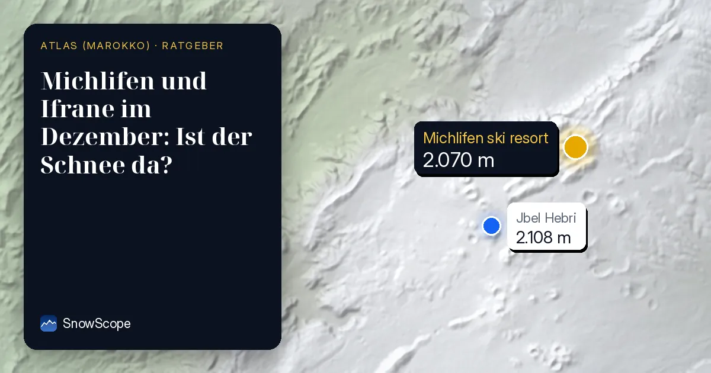

Michlifen und Ifrane im Dezember: Ist der Schnee da?
In 46 Wintern Messgeschichte hat Michlifen Mitte Dezember normalerweise keinen Skischnee. Nur in seltenen Jahren bleibt Schnee lange genug liegen, um wirklich zu zählen. Das ist ein Gebiet für Sturmjäger, nicht zum Planen einer Woche im Voraus.
Die Live-Schneeprognose für Michlifen ski resort in der SnowScope-AppSchneehöhen, Pulverschnee-Alarme und 3D-Karte, gratis.
Warum Michlifen im Dezember kämpft
Michlifen liegt im Mittleren Atlas Marokkos in niedriger Höhe für ein Skigebiet: die Talstation liegt bei 1870 m, Mittelpunkt bei 1970 m und die Bergstation bei 2070 m. Nur 13 km entfernt liegt Ifrane oft unter malerischer Schneedecke, doch Michllfens Hänge erzählen eine andere Geschichte. Die Berge hier bekommen oft Schnee, verlieren ihn aber schnell durch Tauwetter und Wind.
Höhe spielt im Atlas eine kleinere Rolle als in europäischen Gebirgen. Am wichtigsten ist der Zeitpunkt: wann der Schnee fällt und wie schnell die Sonne ihn wegfrisst. Im Dezember steht die Sonne tief, aber sie ist immer noch stark genug, um dünne Decken in Tagen zu beseitigen.

Das Dezember-Bild auf drei Höhen
Auf Mittelpunkt (1970 m) zeigt der 15. Dezember in einem typischen Winter 0 cm. Selbst in einem großzügigen Dezember – ein Winter von zehn – bekommst du nur 5 cm. Am 31. Dezember sitzt ein typischer Winter immer noch bei 0 cm, obwohl ein großer Dezember 17 cm erreicht. Das Triste: 83% der Winter bleiben zu Silvester fast schneefrei (unter 5 cm).
Das Muster ist auf der Talstation schlechter und auf dem Gipfel ähnlich. Der erste bleibende Schnee kommt normalerweise um den 14. Dezember, aber das Wort 'bleibend' ist großzügig: ein typischer Dezember bringt nur 24 Tage mit Schneebedeckung. Viele dieser Tage kommen in kurzen Schüben zwischen Schmelzphasen.

Wenn guter Schnee kommt
Letzter Winter (2025–26) brach das Muster. Am 25. Dezember 2025 lag Mittelpunkt bei 50 cm – genug zum Skifahren. Die Saison erreichte 51 cm über 48 Schneetage. Jbel Hebri gleich daneben lud auch mit 48 cm am 25. Dezember auf, obwohl ein typischer Winter dort nur 20 Schneetage hat.
Diese Winter sind die Ausnahme. Wenn sie kommen, kommen sie plötzlich: ein Tiefdruckgebiet parkt sich über dem Atlas, bringt schweren Schnee, und die Basis wächst schnell. Dann zieht das Wetter weiter. Der Unterschied zwischen einem schneelosen Dezember und einem fahrbaren hängt oft von einer einzigen Sturmanlage ab.
Michlifen gegen höheres Gelände
Oukaïmeden, viel höher in derselben Kette, ist sicherer für einen Dezemberbesuch. Auf Mittelpunkt (2929 m) bietet ein typischer 15. Dezember 16 cm, und 43% der Winter haben dann mindestens 25 cm. Michllfens Mittelpunkt am selben Tag: 0 cm, und nur 2% der Winter erreichen 25 cm.
Selbst Oukaïmeden ist im Dezember ein Risiko. Aber die Chancen verschieben sich so weit, dass du, wenn du früh in der Saison fahren musst, die höhere Station wählen solltest. Michlifen macht nur Sinn, wenn du schnell nach Neuschnee reagieren kannst.
Was die letzten 46 Winter lehren
Die Daten span 1980–81 bis 2025–26 und zeigen keine langfristige Verschiebung. Der schlimmste Dezember brachte 9 cm Maximalschnee auf Mittelpunkt. Der beste brachte 80 cm. Der Median liegt bei 31 cm, aber diese Zahl versteckt die Wahrheit: die meisten Jahre sind dünn, wenige Jahre sind tief, und Dezember ist zwischen ihnen aufgeteilt.
Anfang Dezember (vor 15. Dezember) ist dünner als Ende Dezember. Am 25. Dezember werden gute Jahre häufiger. Am Silvesterabend sind die Chancen auf 25 cm oder mehr auf 7% gestiegen. Wenn du zeitlich flexibel bist, ist das Warten bis Ende Dezember oder Anfang Januar besser als frühzeitig zu buchen.
Wie du das Gebiet im Winter nutzt
Michllfens echte Stärke kommt nach den ersten großen Stürmen im Januar oder Februar. Das ist, wenn die Basis wächst und hält. Willst du im Dezember besuchen, behandle es als Bonus: beobachte das Wetter, sieh ein Tiefdruckgebiet entstehen und gehe innerhalb von zwei oder drei Tagen nach schwerem Schnee. Bring Winterreifen mit und überprüfe die Straßenbedingungen, bevor du losfährst.
Für das Ifrane-Postkartenerlebnis liefert ein oder zwei Tage nach einem Sturm normalerweise gut. Der Schnee ist neu, die Stadt ist weiß, und der Atlas zeigt sich in seiner schönsten Form. Aber im Dezember darauf zu zählen ist Wunschdenken. Plan für Januar an aufwärts, oder jag Stürmen hinterher, die in der Vorhersage auftauchen.
Tipps für Skifahrer
- Beobachte die Vorhersage auf Stürme, nicht den Kalender. Ein Dezemberbesuch funktioniert nur, wenn Schnee in deinem Reisefenster fällt. Fahr innerhalb von 48 Stunden nach schwerem Schnee los, um die beste Bedeckung zu treffen.
- Dezember in Michlifen ist seltenes Skifahren. Wenn die Basis auf unserer Karte schneebedeckt oder dünn aussieht, buche nicht. Wenn du Neuschnee siehst, beweg dich schnell.
- Straßen im Mittleren Atlas vereisen leicht nach Schneefall, besonders in der Dämmerung. Trag Winterreifen und überprüf Bedingungen, bevor du auf den Berg fährst.
- Für einen sicheren Dezembertrip ziehe Oukaïmeden in Betracht. Dezemberschnee dort ist wahrscheinlicher, obwohl immer noch nicht garantiert.
- Anfang Januar und Februar sind zuverlässiger. Plan deine Hauptreise dann, und behandel einen Dezemberschneefall als glückliche Chance, nicht als Versprechen.
Zu diesen Zahlen
Die Schneehöhen der Skigebiete sind der meiste Schnee in den oberen Hängen am angegebenen Tag; es sind Schätzungen für eine Fläche, keine Messung an einem Punkt. Prognosen können sich ändern. Lies vor dem Freeriden immer den offiziellen Lawinenlagebericht.
Diesen Bericht zitieren
Für Forschung, Lehre oder Presse: Zahlen und Grafiken sind unter CC BY 4.0 mit dieser Quellenangabe frei nutzbar.
SnowScope (2026), Michlifen und Ifrane im Dezember: Ist der Schnee da?, https://snowscope.app/blog/de/2026/11/michlifen-ifrane-neige-decembre-moyen-atlas.html, abgerufen am 2026-11-14
SnowScope (Atlas Labs). (2026, November 14). Michlifen und Ifrane im Dezember: Ist der Schnee da?. SnowScope snow reports. https://snowscope.app/blog/de/2026/11/michlifen-ifrane-neige-decembre-moyen-atlas.html
BibTeX
@misc{snowscope2026michlifenifraneneigedece,
author = {{SnowScope (Atlas Labs)}},
title = {Michlifen und Ifrane im Dezember: Ist der Schnee da?},
year = {2026},
month = nov,
howpublished = {\url{https://snowscope.app/blog/de/2026/11/michlifen-ifrane-neige-decembre-moyen-atlas.html}},
note = {Published 2026-11-14 13:29 UTC; accessed 2026-11-14}
}· CC BY 4.0 · Methoden, Daten und Werkzeuge →
Michlifen ski resort: Schnee und Temperatur nach Höhe, dieser Winter vs letzter (Werkzeuge) →
Michlifen ski resort folgen
Gratis: eine Nachricht, wenn Neuschnee kommt, und jeden Morgen die Vorhersage.